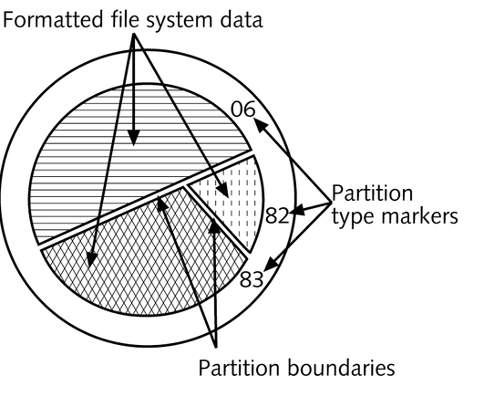
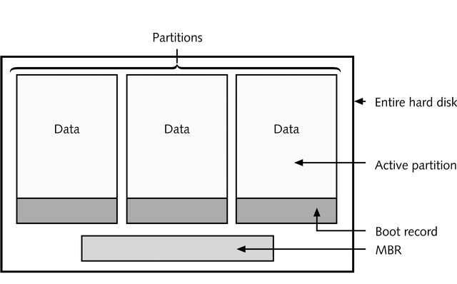

Unix System Administration
Unit 2:
- Linux OS structure
- Hardware inventory
- Disks and partitions
- Installation steps
- Boot loader
Popular Linux Distributions
- Redhat
- Fedora
- Suse
- Debian
- Ubuntu
- Mandriva
- Gentoo
- Slackware
Useful Hardware Information for Installing Linux
| Processor |
Pentium III 1Ghz |
| Memory |
512 MB |
| Hard Disk |
40 GB |
| Video Card |
Intel/AMD/Nvidia |
| Network Card |
Intel/Broadcom |
Overview of Linux Installation
- Installation is started by booting from
- floppy disk, CD
- other bootable device: network, USB
- Installation tasks:
- identify source of the Linux files
- answer miscellaneous questions
- identify target partition(s)
- define what software to install and configure
- configure boot loader
Installation sources
- CD-ROM
- Hard disk
- Floppy disk, USB device
- Network installation
- ftp
- http
- nfs
- PXE Environment
Answer Questions
- language
- keyboard
- time zone
- superuser password
- network setup
- initial firewall configuration
- create initial user(s)
Identify Target Partitions

Preparing Hard Disk Partitions
- physical vs. logical
- IDE disks: /dev/hda /dev/hdb
- partitions numbered starting with 1
- example: /dev/hda1
- SCSI disks: /dev/sda
- file system vs. swap space
- file system type
- mount point
Some Target Partitions
- /
- optional: /boot
- swap space
- /home
Select Installation Type
- personal desktop
- workstation
- server
- custom
Select Software Packages
- GUI: X11, Gnome, KDE, lxde
- editors
- internet browsers and utilities
- web server and utilities
- developers tools
- ...
- optional: everything
Configuring the Boot Manager

Boot Manager: LILO (LInux LOader)
- Linux loader
- configuration
- installation
Boot Manager: GRUB( GRand Unified Bootloader )
- Grand Unified Bootloader
- configuration
- grub.conf
- Naming convention: (hd0,0)
- installation
THE END
BY Narayanaperumal Gurusamy / gnperumal@gmail.com